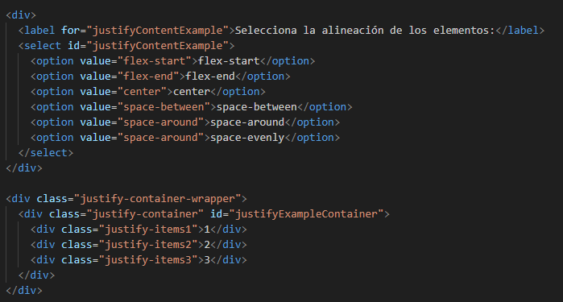
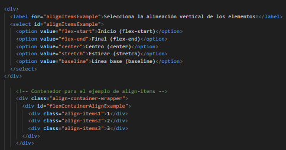
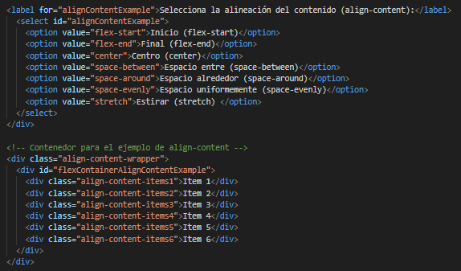

Esta propiedad controla la forma en que se organizan los elementos frontalmente
puede presentar varias propiedades, como:
flex-start: Alinea los elementos al principio del contenedor (valor por defecto).
flex-end: Alinea los elementos al final del contenedor.
center: Alinea los elementos al centro del contenedor.
space-between: Distribuye los elementos con espacio igual entre ellos.
space-around: Distribuye los elementos con espacio igual alrededor de cada uno.
space-evenly: Distribuye los elementos con espacio igual entre ellos y en los extremos.
El siguiente es el codigo del ejemplo en HTML, CSS y JavaScript
Selecciona el valor de la propiedad y veras su comportamiento
Esta propiedad controla la alineacion vertical de los elementos eje perpendicular al principal
puede presentar varias propiedades, como:
stretch: Estira los elementos al total del largo del contenedor (posicion por defecto)
flex-start: Alinea los elementos al inicio del eje transversal(arriba)
flex-end: Alinea los elementos al final del eje transversal (abajo).
center: Alinea los elementos en el centro del eje vertical
baseline: Alinea los elementos según la línea base del texto de cada elemento. Es
es decir el alto del texto que contengan internamente
El siguiente es el codigo del ejemplo en HTML, CSS y JavaScript
Strech solo funciona si los items no tienen un height definido, como lo esta el elemento 1
los elementos 2 y 3, tiene definido el height, por lo tanto strech no funciona, lo mismo
sucede con linea base (base-line)
Controla como se comportan los elementos dentro del contenedor flex en el eje transversal
es mas comunmente usado cuando hay varias lineas de elementos en el contenedor flex, es decir
Cuando hay mas de una linea de contenido
Si el contenedor ya tiene suficiente altura para acomodar los elementos (es decir, las líneas de
elementos llenan el contenedor), el estiramiento no se notará porque ya están ocupando todo el espacio.
Sin embargo, si el contenedor es más alto que el espacio necesario para las líneas de elementos,
entonces el stretch estirará las líneas de elementos para llenar todo el espacio vertical disponible.
Los valores para esta propiedad pueden ser:
Se alinean en la parte superior
flex-end: se alinean en la parte inferior
center: Alinea los elementos al centro del contenedor
space-between: se distribuyen dejando un espacio igual entre ellos(items) (afecta el margin)
space-around: Alinea los elementos dejando un espacio igual alrededor
space-evenly: Alinea los elementos ejando un espacio igual alrededor y entre ellos (items)
stretch: Las líneas se estirarán para ocupar todo el espacio vertical del contenedor. (afecta el tamaño del contenedor)
El siguiente es el codigo del ejemplo en HTML, CSS y JavaScript
strech solo funciona si los items no tienen un height definido, como los elementos tienen height definido,
esta propiedad no funciona, auque solo abarcaria todo el espacio